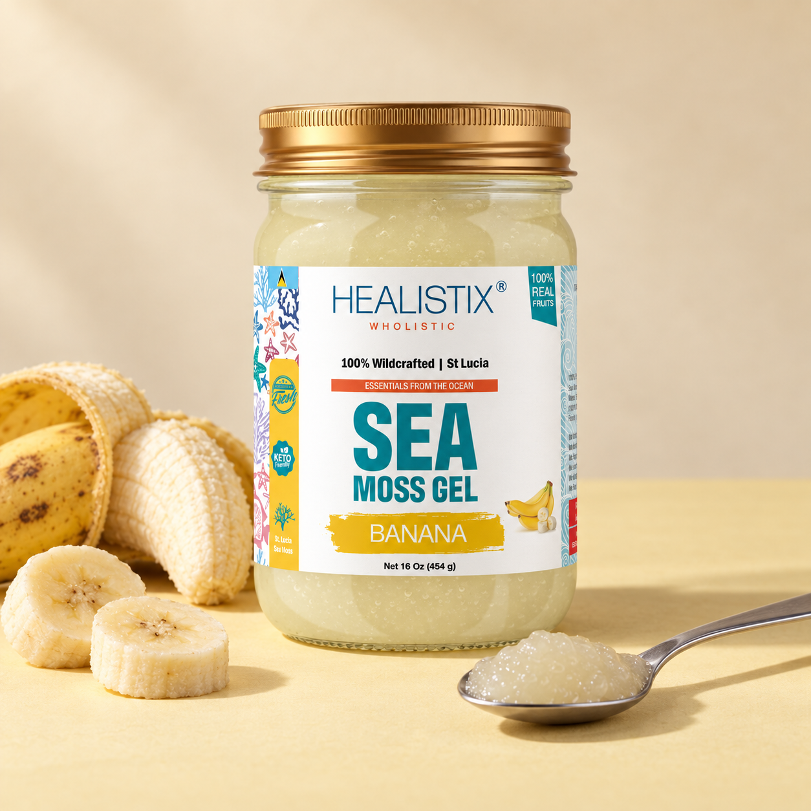

BANANA · NOURISHMENT WITH A PURPOSE
A little goodness.
Inside every serving.

YOUR DAILY SPOONFUL · BANANA
VITAMIN B6 · 10% DVEveryday immune support
B6 supports normal immune function and helps your body metabolize nutrients.
IRON · 15% DVOxygen transport
Iron helps make hemoglobin, which carries oxygen in your blood.
FOLATE · 15% DVCell renewal
Folate supports normal cell division and DNA production.
Per 2-tablespoon (28g) serving, as printed on the Banana jar. DV = Daily Value. These describe nutrient functions, not results from a clinical trial of this gel. Nutrition varies by flavor.
The science behind the spoonful
These are established roles of nutrients listed on the Banana label. The NIH Office of Dietary Supplements explains how iron supports oxygen transport, B6 contributes to immunity and nutrient metabolism, and folate supports cell division. These sources do not establish that this gel treats symptoms or increases metabolic rate.